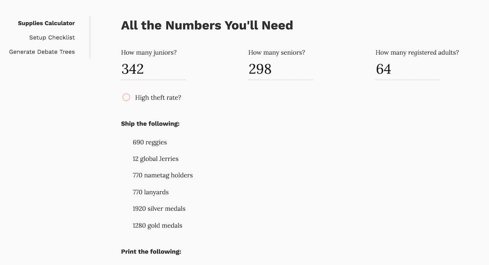

During my time with the World Scholar's Cup, an international educational organization, I became a senior staff member not because I was a programmer (or a designer) but because I coordinated much of our high-level logistics. But when I learned programming, that didn't stop me from spotting routines that could be easily streamlined to save time and ward against human error.
As I learned React for the first time, I almost instantly started thinking about making an interactive calculator for our many lists. We make lists all the time, hundreds of them a year, once for each event: a shipping list to send to our manufacturer in Shenzhen, a printing list to send to our host school, and a catering list to send to whoever is providing food. A few team members have tried to make primitive calculators in Google Sheets, but they were rarely used because they were difficult to use and prone to being accidentally destroyed. So, I made this website that was easily accessible instead.
I made a linear regression algorithm based off of past experience (having run many of these rounds myself) to generate these lists, and it really calculates all the numbers you'll need for you. Not all of it is captured in the screenshot, but you can try putting those numbers in yourself, too. The commands were written to be as simple as possible. Ship the following, followed by a shipping list to copy and paste. Print the following, I say next, followed by a large list of things to print.
Then comes the warning: Be aware, telling the user how many debate rooms they should plan for, and how many judges to go along with it. Finally, it tells you how many meals to cater for, and it is accompanied by a slider. The default value is 10%, but depending on where the event is, the user should slide it up or down. Since I made the tool for this very specific audience, I made sure to include what's important information to have: the ratio of vegetarian meals is a reliable statistic that can be safely used to calculate what we should cater for.
You may have noticed the toggle above that says "high theft rate". As part of our program's mission is to spread the love of learning across the world, we bring stuffed animal alpacas to each student that attends our events. Some places have a history of alpaca theft (and also medals when it's time for awards), and we tend to ship extra as a precaution just in case. I wasn't kidding about making this a very, very niche tool, but it's for a cause that I'm a big part of.
I also made a checklist in another page in the same app, but it's more of a guide for newer team members who haven't gotten the whole routine down yet. It's less exciting, but here's the link if you want to read some strange jargon.
All of our rosters are kept on Google Sheets, and validation is done only by being extra careful with the data entries. Rosters are generally in some sort of flux, as delegations add and remove students and reshuffle their teams. What's more painful are our global event rosters, which can hold up to 4000 students and hundreds of adults. Delegations tend to even merge together and form "mixed teams" then, or end up with "two-member teams", which are teams missing a third student. All in all, it only takes one mistake for the statistics sheet to be off, which has historically resulted in hours of backtracking to see where it came from. (It's not as easy as a simple COUNTIF function, unfortunately.)
What I developed instead is a Google Apps script attached to a base roster template that has functions for automatically formatting and validating the counts for each delegation. No longer do I have to go through the roster by hand and highlight each mixed team alternating colors of yellow and baby blue. A couple of times, unique situations have come up where I've been asked to make a custom script that highlights all the teams whose members were all born in 2008 or later.
Out of privacy concerns, no screencaps of this in action is shared in here, but feel free to contact me if you want to learn more.
Something that I frequently take charge of at events, especially large ones, is essay reading. Every student turns in an essay, on paper, which is labelled with their ID. It's our job to get that ID entered into a spreadsheet associated with a score and the initials of the reader who read them (for normalization later).
It doesn't sound too bad, but it only takes one typo to result in an ID that doesn't exist, or one that overlaps with someone else. In 2017, I remember asking for every essay to be sorted by ID and going through them for hours looking for which ones were miskeys and which ones were real. And after that whole ordeal was over, we often pulled out the top essays to reread. But that wasn't possible without first normalizing all the IDs, and when you had dozens of different graders, normalizing and then pooling without some sort of automation was not a fun process.
Enter Google Apps Scripts! I made an Excel spreadsheet where people can enter their scores, and import the roster to do ID checking. The app had several functions: one to validate scores and spit out all the missing and duplicate entries, and another to normalize everything, and another to sort everything. It gave stats for each reader: how many they read, their average, and their standard deviation (which we keep a very close eye on). The best part was how much time it saved; I used to line up the sorted essay scores with the sorted roster and compare almost line by line looking for differences.
It's difficult injecting new tools into a workplace, especially one with routines that have steadfastly worked hundreds of times in the past. Not everyone uses my tools, but I made them in hopes that they'll save someone time, and in that I hope I've helped at least a bit there. Some of the younger team members have picked up on these, but a lot are mostly whipped out for edge cases or when a strange situation comes up. Nonetheless, I enjoy the process of problem solving as a whole, and I hope that I've at least identified some routines that could be streamlined to save everyone some manual labor time.